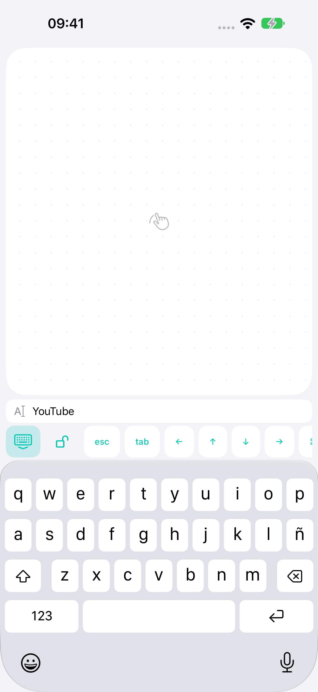

↖
Un ratón siempre a mano
Un dedo mueve el cursor. Dos dedos desplazan la página. Clic izquierdo, derecho y doble clic, además de mantener pulsado para mover ventanas o cambiar su tamaño.
Mueve el cursor, desplázate y escribe desde el teléfono. BridgeX conecta iPhone o Android con el ordenador. Mac ya está disponible; Windows está en desarrollo.
Gratis · iOS 17+ / Android 12+ · macOS 14+ · Windows en desarrollo
01Bluetooth o Wi-Fi de casa
02Control sin internet
03Sin cuenta. Sin anuncios.
DESDE EL SOFÁ. LA CAMA. TU SILLÓN FAVORITO.
Un dedo mueve el cursor. Dos dedos desplazan la página. Clic izquierdo, derecho y doble clic, además de mantener pulsado para mover ventanas o cambiar su tamaño.
Usa el teclado del teléfono con una vista del texto encima. Corrige errores conservando un panel táctil amplio.
Desplazamiento con inercia, Mission Control, cambio de escritorio y pellizco para ampliar en las apps compatibles.
Bluetooth LE funciona sin router. En casa también puedes usar Wi-Fi. Los comandos se cifran y no pasan por ningún servidor externo.

PANTALLA PEQUEÑA. UN POCO MÁS DE COMODIDAD.
Abre la búsqueda en tu Mac y escribe en el teléfono. Revisa el texto sobre el teclado, corrige una errata y pulsa Intro.
Los controles de pestañas, flechas, Escape, Tab, copiar y pegar comparten la misma barra. El texto escrito no se guarda en disco.
Cómo protegemos tu privacidad ↗CONFIGÚRALO UNA VEZ
Instala la app para Mac y permite el control en Ajustes del Sistema → Privacidad y seguridad → Accesibilidad.
Activa Bluetooth en ambos dispositivos o conéctalos a la misma red de casa.
Muestra un QR de BridgeX en el ordenador y toca Conectar PC/Mac en iPhone o Android. Esta versión admite Mac; Windows está en desarrollo.
ANTES DE CONECTAR
Para controlar el Mac, no. Bluetooth conecta directamente y Wi-Fi funciona dentro de tu red de casa. Necesitarás internet para descargar las apps por primera vez.
La app gratuita BridgeX para Mac. Recibe los comandos del teléfono y los ejecuta en tu sesión abierta. Requiere macOS 14 o posterior.
El Mac debe estar encendido, con la sesión iniciada y BridgeX en ejecución. No se admite activar el Mac ni controlarlo antes de iniciar sesión.
No. Enlaza los dispositivos con un código QR. El desarrollador no recibe el texto que escribes ni tu historial de control.
Sí. La primera versión es gratuita, sin compras integradas, suscripciones ni anuncios.
BridgeX admite desplazamiento, zoom con pellizco y gestos del sistema mediante atajos de teclado estándar. Su comportamiento depende de la app y de los ajustes del Mac. No se emulan el zoom continuo de hardware ni Force Touch.
HISTORIAL DE BRIDGEX
Mac 1.0.1 (21)
Android 0.1.15 (16)
Android 0.1.14 (15)